After completing this lesson, students will be able to
know about horticulture and floriculture.
classify biomanures and know their importance.
differentiate between hydroponics, aquaponics and aeroponics.
know the importance of dairy farming and cattle breeds.
gain knowledge on the aspects of aquaculture and pisciculture.
gain awareness on vermicomposting methods and the benefits of vermicompost.
identify the commercial products obtained from apiculture
The gift of nature is almost unlimited and thus a variety of useful products are obtained from plants. Economic uses of plants are varied and therefore the scope for improvement and their cultivation is immense. Floriculture and horticulture have gained considerable public attraction. In recent scenario more emphasis is given to the progress of economic aspects of zoology like aquaculture Bracket OPEN culture of fish, prawn, crabs, pearl and edible oysters bracket closed, vermiculture, apiculture and dairy farming which are gaining more importance as animal-based farming due to their economic and commercial values. Animal farming has now become an agro based entrepreneurship and is beneficial to rural farmers. We will study about them elaborately in this lesson.
Horticulture is a branch of agriculture that deals with cultivation of fruits, vegetables, and ornamental plants. The word horticulture is derived from the latin words 'hortus' meaning garden and 'colere' meaning to cultivate. Horticulture is both a science and an art of growing plants with improved growth, quality, yield, and with resistance to diseases, insects, stress etc. There are four main classes of horticulture: Bracket OPEN I bracket closed Pomology Bracket OPEN fruit farming bracket closed, Bracket OPEN ii bracket closed Olericulture Bracket OPEN vegetable farming bracket closed, Bracket OPEN iii bracket closed Floriculture Bracket OPEN flower farming bracket closed, Bracket OPEN iv bracket closed Landscape gardening.
The term pomology is derived from the latin word ‘pomum’ means fruit and ‘logy’ means study. It deals with development, enhancement of fruit quality, cultivation techniques, regulation of production periods and reduction of production cost of fruits.
Olericulture is the science of growing vegetables. Vegetable farming can be classified into: 1bracket closed Kitchen or Nutrition gardening 2bracket closed Commercial gardening 3bracket closed Vegetable forcing.
Kitchen gardening: Kitchen gardening is growing of vegetables in small scale at household. Example Beans, Cabbage, Lady's finger, Tomato, Brinjal, Carrot, Spinach etc.
Figure 23.1 Kitchen gardening Image was given below
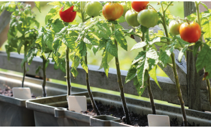
Box item open
Government of Tamil Nadu has launched Ulavan Bracket OPEN farmer bracket closed mobile application. It can be used by farmers to gather information on farm subsidies, farm equipments, crop insurance and weather conditions. It also provides information on available stock of seeds and fertilizers in local government and private stores. box item ends
Commercial gardening: It is the production of vegetables in large scale to be sold in markets
Figure 23.2 Commercial gardening image was given below
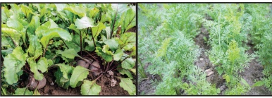
.Box item open
Discuss in your class room about the importance of crop insurance to farmers. Box item ends
Vegetable forcing It is the method of growing vegetables in buildings, green houses, cold farms or under other artificial growing conditions. It is the most intensive type of vegetable growing. Example Cabbage, Tomato, Brinjal etc.
Figure 23.3 Vegetable forcing image was given below
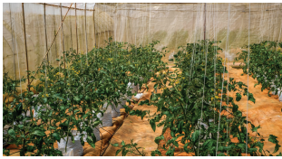
Green House or Poly House: It is a framed structure covered with transparent material to grow crops under partially or fully controlled environmental conditions to get optimum growth and productivity. It is the fastest growing sector in the agriculture worldwide.
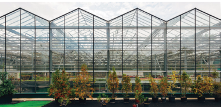
Figure 23.4 Green House
1. Disease-free plants can be produced continuously.
2. Water requirement of crops is very less.
3. Yield is very high compared to outdoor cultivation.
4. Limited pesticide is needed.
5. It protects plants from uncertain weather.
Floriculture is the art of cultivation of flowering and ornamental plants in garden for beauty or floristry. It is concerned with growing traditional flowers, cut flowers, bedding plants, foliage potted plants, arboriculture trees, turf grass for beautification and value added products like essential oils, pharmaceutical and nutraceutical compounds. Examples: Geraniums Bracket OPEN Pelargonium bracket closed, Busy lizzies Bracket OPEN Impatiens bracket closed, Chrysanthemum and Petunia.
Figure 23.5 Flower Farming image was given below
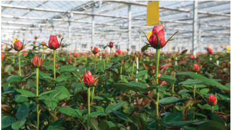
Box item open
It is an agricultural crops insurance scheme of Indian government. Under this scheme the central government provides insurance cover and financial assistance to farmers. It was launched on 18th February 2016. Box item ends
1. Flowers are used for decoration purpose.
2. They are also used for personal needs and, religious and ceremonial offerings.
3. They impart colour and beauty to the garden.
4. They increase country’s economy.
Landscape horticulture is the study of designing and constructing landscapes in homes, business firms and public areas to imitate natural scenery
Figure 23.6 Landscape gardening image was given below
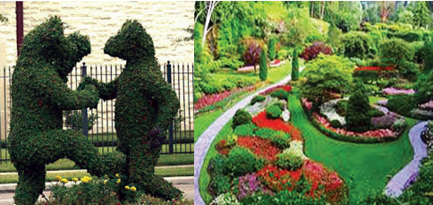
Organic manures are predominantly derived from plant debris, animal faeces and microbes. They make the soil fertile by adding nutrients like nitrogen. Few of them are listed below.
It consists of faeces and urine from livestocks like cattle, horses, pigs, sheep, chickens, turkeys, rabbits, etc. Manures from different animals have different qualities and different applications.
Farmyard manure: It is a mixture of cattle dung, urine, litter material and other dairy wastes. On an average well decomposed farm yard manure contains 0.5 percent Nitrogen, 0.2 percent available phosphate and 0.5 percent available potash.
Sheep and Goat manure It contains higher nutrients than farm yard manure. It contains 3 percent Nitrogen, 1 percent phosphorus pentoxide and 2 percent potassium oxide.
Compost is a soil conditioner as well as a fertilizer, that is rich in nutrients. It is produced by natural decomposition of organic matter such as crop residues, animal wastes, food wastes, industrial and municipal wastes by microorganisms under controlled conditions.
Green manure is obtained by collection and decomposition of green leaves, twigs of trees, field bunds etc. Green manure improves soil structure, increases water holding capacity and decreases soil loss by erosion. It also helps in reclamation of alkaline soils and reduces weed proliferation. It is a manure obtained from undecomposed green material derived from leguminous plants Example Sunhemp Bracket OPEN Crotolaria juncea bracket closed, Dhaincha Bracket OPEN Sesbania aculeate bracket closed, Sesbania Bracket OPEN Sesbania speciose bracket closed.
Biofertilizers are substances that contain living microorganisms which, when applied to seeds, plant surfaces, or soil, colonize the rhizosphere or the interior of the plant and promote growth by increasing the supply or availability of primary nutrients to the host plant.
Rhizobium: Rhizobium is a soil bacterium that colonize the roots of leguminous plants to form root nodules. The bacteria fix atmospheric nitrogen and convert them to ammonia.
Figure 23.7 Rhizobium biofertilizer image was given below
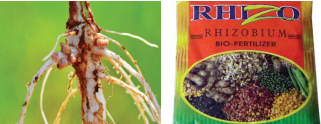
Azospirillum: Azospirillum bacteria has the ability to use atmospheric nitrogen and transport this nutrient to the crop plants. It is inoculated on maize, barley, oats and sorghum crops. It increases productivity of cereals by 5 to 20 percent of millets by 30 percent and fodder by over 50 percent .
Figure 23.8 Azospirillum biofertilizer image was given below
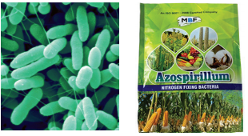
Azotobacter: Application of Azotobacter bacteria has been found to increase yield of wheat, rice, maize and sorghum. Apart from nitrogen fixation, these organisms are capable of producing antifungal and antibacterial compounds.
Figure 23.9 Mycorrhizae biofertilizer image was given below
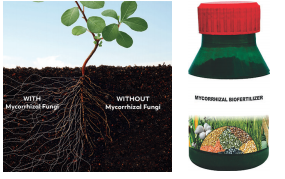
Mycorrhizae: These fungi have symbiotic association with the roots of vascular plants. They increase the uptake of phosphorus. Example Citrus, Papaya.
Azolla:Azolla is a free floating, aquatic fern found on water surfaces having a cyanobacterial symbiotic association with Anabaena. It is a live floating nitrogen factory using energy from photosynthesis to fix atmospheric nitrogen.
Figure 23.10 Azolla biofertilizers image was given below
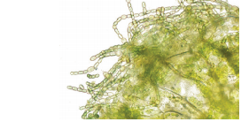
Box item open
Tamil Nadu Government has recently launched 'Biofertiliser Scheme'. It is aimed at better management of natural farming and helps to boost and maintain soil fertility. Box item ends
The history of medicinal plants is as old as the history of human beings. Most medicines are obtained either directly or indirectly from plants. All the major system of medicines such as Ayur veda, Yoga, Unani, Siddha, Homeopathy Bracket OPEN AYUSH bracket closed use drugs obtained from plants and animals. These drugs from medicinal plants are called secondary metabolites. Plants produce primary metabolites for their own living Example carbohydrates, amino acids etc., and secondary metabolites for protection, competition and species interaction. Example alkaloids, terpenoids, flavonoids etc. Phytochemistry is the study of phytochemicals which are chemical substances derived from various parts of the plant. Few plant derived drugs are described in Bracket OPEN Table 23.1bracket closed.
Collect at least five medicinal plants from your locality. Identify the plant and try to find out its medicinal value. Box item ends
Table 23.1 Drugs derived from Medicinal plants table was given below
Serial Number |
Tamil Name |
Botanical Name |
Drug |
Parts used |
Disease cured |
1 |
Katrazhai |
Aloe vera |
Anthraquinones |
Leaves |
Heal wounds, Skin disease, Cancer, Psoriasis |
2 |
Tulsi |
Ocimum sanctum |
Essential oil |
Leaves |
Cold, Fever, Skin disease |
3 |
Nannari |
Hemidesmus indicus |
Terpene |
Roots |
Bacterial infections, Diarrhoea |
4 |
Nilavembu |
Andrographis paniculata |
Terpenoids |
All parts |
Dengue fever, Diabetes, Chikungunya |
5 |
Vetpalai |
Wrightia tinctoria |
Flavonoids |
Latex, Leaves |
Psoriasis, Diarrhoea, Swellings |
6 |
Cinchona maram |
Cinchona officinalis |
Quinine |
Bark |
Malaria, Pneumonia |
7 |
Chivan Amalpodi Bracket OPEN Sarpagandha bracket closed |
Rauwolfia serpentina |
Reserpine |
Root |
Blood pressure, Antidote for Snake bite |
8 |
Thaila maram |
Eucalyptus globulus |
Essential oil |
Leaves |
Fever, Headache |
9 |
Pappali |
Carica papaya |
Papain |
Leaf, Seed |
Dengue |
10 |
Nithya kalyani |
Catharanthus roseus |
Alkaloids |
All parts |
Leukemia, Cancer |
Box item open
The Council of Scientific and Industrial Research Bracket OPEN CSIR bracket closed and National Botanical Research Institute Bracket OPEN NBRI bracket closed and Central Institute for Medicinal and Aromatic Plants Bracket OPEN CIMAP bracket closed have jointly launched India’s first anti diabetic ayurvedic drug BGR -34 Bracket OPEN BGR-Blood Glucose Regulator bracket closed. It contains 34 identified active phytoconstituents from herbal resources. It works by controlling blood sugar levels Box item ends
Mushroom cultivation is a technology of growing mushrooms using plant, animal and industrial waste. In short it is wealth out of waste technology. This technology has gained importance worldwide because of its dietary fibres and protein value. Mushroom is a fungai belonging to basidiomycetes. It is rich in proteins, fibres, vitamins and minerals. There are more than 3000 types of mushrooms. Example Button mushroom Bracket OPEN Agaricus bisporus bracket closed, Oyster mushroom Bracket OPEN Pleurotus species.bracket closed, Paddy straw mushroom Bracket OPEN Volvariella volvacea bracket closed. The cultivation takes one to three months. Major stages of mushroom cultivation are explained below
Composting: Compost is prepared by mixing paddy straw with number of organic materials like cow dung and inorganic fertilizers. It is kept at about 50°C for one week.
Spawning: Spawn is the mushroom seed. It is prepared by growing fungal mycelium in grains under sterile conditions. Spawn is sown on compost.
Casing: Compost is covered with a thin layer of soil. It gives support to the growing mushroom, provides humidity and helps regulate the temperature
Pinning: Mycelium starts to form little bud, which will develop into mushroom. Those little white buds are called pins.
Harvesting: Mushroom grow better in 15° C to 23°C. They grow 3 cm in a week which is the normal size for harvesting. In the third week the first flush mushroom can be harvested
Fig 23.11 Mushrooms was given below
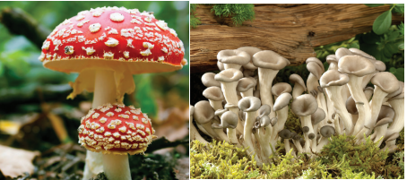
Preservation: Discolouration, weight and flavour loss are the main problems during harvesting of mushrooms. The following methods are used to increase their life.
Bracket OPEN 1 bracket closed Freezing Bracket OPEN 2 bracket closed Drying Bracket OPEN 3 bracket closed Canning Bracket OPEN 4 bracket closed Vacuum Cooling
Bracket OPEN 5 bracket closed Gamma radiation and storing at 15 degree C.
Hydroponics is the method of growing plants without soil, using mineral nutrient solutions in water. The containers are made of glass, metal or plastic. They range in size from small pots for individual plants to huge tank for large scale growing. It was demonstrated by a German Botanist Julius Von Sachs in 1980. Hydroponics is successfully employed for the commercial production of seedless cucumber and tomato. Plants are suspended with their roots submerged in water that contain plant nutrients. The roots absorb water and nutrients, but do not perform the anchoring function. Therefore, the plants must be mechanically supported from above.
Bracket OPEN 1 bracket closed Conservation of water and nutrients.
Bracket OPEN 2 bracket closed Controlled plant growth.
Bracket OPEN 3 bracket closed In deserts and Arctic regions hydroponics can be an effective alternative method.
Figure 23.12 Hydroponics image was given below
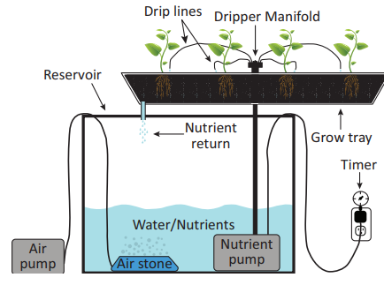
The aeroponic system is the high-tech type of hydroponic gardening. The growth medium in this type is primarily air. The roots hang in the air and are misted with nutrient solution. The misting is usually done for every few minutes, as roots will dry out rapidly if the misting cycles are interrupted. A timer controls the nutrient pump much like other types of hydroponic systems, except that the aeroponic system needs a short cycle timer that runs the pump for a few seconds every couple of minutes.
Figure 23.13 Aeroponics image was given below
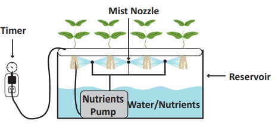
Aquaponics is a system of a combination of conventional aquaculture with hydroponics in a symbiotic environment, in which plants are fed with the aquatic animals’ excreta or wastes. These wastes are broken down by nitrifying bacteria initially into nitrites and later into nitrates that are utilized by the plants as their nutrients. Thus, the wastes are utilized and water is recirculated back to the aquaculture system.
Aquaponics consists of two main parts, aquaculture- for raising aquatic animals like fish and hydroponics-for raising plants. Green leafy vegetables like chinese cabbage, lettuce, basil, coriander, parsley, spinach and vegetables like tomatoes, capsicum, chillies, bell peppers, sweet potato, cauliflower, broccoli and egg plant can be grown in aquaponics.
Figure 23.14 Aquaponics Image was given below
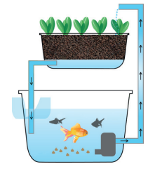
Dairy farming involves rising of cattle for milk production. It involves the proper maintenance of cattle, along with collection and processing of milk and milk products which are useful to man. Dairying is the production and marketing of milk and its products.
The Indian cattle include cows and buffaloes. They are domesticated for milk, meat, leather and transportation. They belong to two different species, Bos indicus Bracket OPEN Indian cows and bulls bracket closed and Bos bubalis Bracket OPEN buffaloes bracket closed. These cattle animals are reared for milk and farm labour. They are classified into three types: Dairy breeds, Draught Bracket OPEN or bracket closed Draft breeds, Dual purpose breeds.
a. Dairy breeds: Dairy animals are domesticated for obtaining milk. The cows Bracket OPEN milk producing females bracket closed are high milk yielders Bracket OPEN milch animals bracket closed. The dairy breeds are: a bracket closed Indigenous breeds b bracket closed Exotic breeds.
Indigenous breeds are native of India. They include Sahiwal, Red Sindhi, Deoni and Gir. These cattle are well built with strong limbs, prominent hump and loose skin. Milk production depends on the duration of the lactation period Bracket OPEN the period of milk production after the birth of a calf bracket closed. These local breed animals show excellent resistant to diseases.
Exotic breeds Bracket OPEN Bos Taurus bracket closed are imported from foreign countries. They include Jersey, Brown Swiss and Holstein-Friesian etc. These foreign breeds are selected for long lactation periods.
b. Draught Bracket OPEN or bracket closed Draft breeds: They are used for agricultural work, such as tilling, irrigation and carting. These include Amritmahal, Kangayam, Umbla chery, Malvi, Siri and Hallikar breeds. Bullocks are good draft animals while the cows are poor milk yielders.
c. Dual purpose breeds: The cows of these breeds provide milk and the bulls are useful for farm work. In India these breeds are favoured by farmers. They include Haryana, Ongole, Kankrej and Tharparkar.
Box item open
Kangayam: It originated in Kangayam and is observed in Dharapuram, Perundurai, Erode, Bhavani and part of Gobichettipalayam taluk of Erode and Coimbatore district.
Puli kulam: This breed is commonly seen in Cumbum valley of Madurai district in Tamil Nadu. It is also known as Jalli kattu madu, They are mainly used for penning in the field and useful for ploughing. Box item ends
Figure 23.15 Cattle breeds was given below
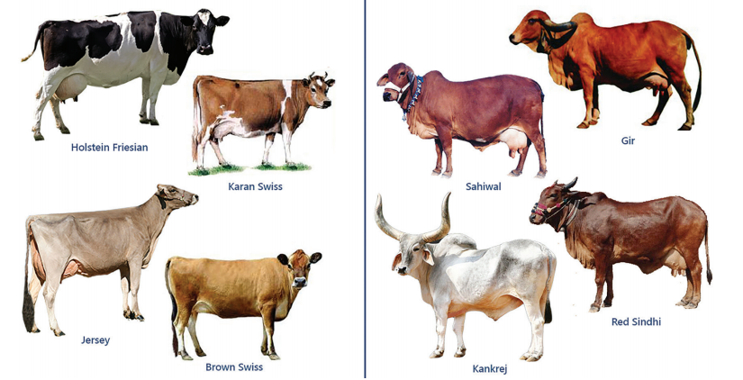
The food requirement for cattle should support healthy life of the animal and milk producing requirement. The feed for dairy cattle is broadly classified into two: Roughages and Concentrates
Roughage is a coarse and fibrous fodder. It consists of succulent feed Bracket OPEN cultivated grass, fodder and root crops bracket closed and dry fodder Bracket OPEN hay, straw and chaff bracket closed.
Concentrates are low in fibre and contain high level of carbohydrates, protein and other nutrients. A variety of raw materials such as solam Bracket OPEN jowar bracket closed, kambu Bracket OPEN pearl millet bracket closed, ragi Bracket OPEN finger millet bracket closed, rice bran, wheat bran, cotton seed cake, mustard cake, linseed cake, groundnut cake, mango seed, neem cake and yellu Bracket OPEN sesame bracket closed cake can be used to make concentrate feed. They should also be fed on green fodder Bracket OPEN maize, lucerne, berseem, millet, and elephant grass bracket closed.
Dairy cattle need balanced rations containing all nutrients in proportional amounts and food additives which contain minerals, vitamins, antibiotics and hormones to promote the growth of animals, good yield of milk and to protect them from diseases. The daily average feed ratio of a milking cow is:
Bracket OPEN 1 bracket closed 15-25 kg of roughage Bracket OPEN dry grass and green fodder bracket closed
Bracket OPEN 2 bracket closed 4-5 kg of grain mixture
Bracket OPEN 3 bracket closed 100 to 150 litres of water
Box item open
Dr. Verghese Kurein, was the founder of National Dairy Development Board Bracket OPEN NDDB bracket closed and was called the Architect of India’s Modern Dairy Industry and the Father of White Revolution. NDDB designed and implemented the world’s largest dairy development programme called OPERATION FLOOD.
Improved breeding techniques in cattle have tremendously increased the production of new breeds with high capacities.
Intensive Cattle Development Programme: It is based on cross breeding of indigenous cows with exotic Bracket OPEN European bracket closed breeds to increase milk production. New methods and modern equipments are made available for machine milking of cows.
Operation Flood Programme: It is based on dairy commodity aid to increase milk supply in urban areas.
Aquaculture is the rearing of economically important aquatic organisms like fishes, prawns, shrimps, crabs, lobsters, edible oysters, pearl oysters and seaweeds under controlled and confined environmental conditions using advanced technologies.
Aquaculture is classified into:
1. Freshwater aquaculture
2. Marine water aquaculture Bracket OPEN Mariculture bracket closed
Freshwater aquaculture: The rearing of aquatic organisms in freshwater is called freshwater aquaculture. Culture of organisms is carried out in pond, river, dam, lake and cold water. These freshwater resources remain within the land. Tilapia, carps Bracket OPEN Catla, Rohu, Mrigal bracket closed, catfishes, and air breathing fishes are cultured in freshwater.
Box item open
Tamil Nadu is a leading state endowed with rich fishery resources from Marine, Inland and Coastal Aquaculture. The marine fisheries potential of the state is estimated at 0.719 million tonnes. The inland fishery resources have a potential to yield 4.5 lakh metric tonnes of fishes. Tamilnadu ranks sixth among the maritime states in coastal farming. Box item ends
Marine water aquaculture: The cultivation of aquatic organisms is in sea water. This is also referred as Mariculture or Sea farming. Culture of organisms is carried out along the sea coast Bracket OPEN inshore area bracket closed and in deep sea. Organisms like shrimps Bracket OPEN marine prawns bracket closed, pearl oysters, edible oysters, mussels and fin fishes like salmons, sea bass, milk fishes and mullets are cultured in marine water.
Aquaculture has become the fastest growing food producing sector to meet the demands of food and nutrition to the growing population through increased production from aquatic food resources. It aims at blue revolution. It is a major source of export and foreign exchange earnings for the country. It generates employment through fish farming in rural and under developed area.
Pesiculture or Fish culture is the process of breeding and rearing of fishes in ponds, reservoirs Bracket OPEN dams bracket closed, lakes, rivers and paddy fields. It is the farming of economically important fishes under controlled conditions.
Extensive fish culture: Culture of fishes in large areas with low stocking density and natural feeding.
Intensive fish culture: Culture of fishes in small areas with high stocking density and providing artificial feed to increase production.
Box item open
The Central Marine Fisheries Research Institute Bracket OPEN CMFRI bracket closed was established by the Government of India in 1947 at Cochin, Kerala State. Its main focus is on marine fisheries landings, research on taxonomy and bioeconomic characteristics of marine organisms.
The Central Institute of Brackish Water Aquaculture Bracket OPEN CIBA bracket closed was established in 1987 with its headquarters at Chennai. The objective of CIBA is management of sustainable culture system for fin fish and shell fish in brackish water. CIBA assists small aquafarmers in fin fish and shrimp farming by providing sustainable modern technologies box item ends
Monoculture: It is the culture of single type of fish in a water body. It is also called mono species culture.
Polyculture: It is the culture of more than one type of fish in a water body. It is also called composite fish culture.
Integrated fish farming: It is the culture of fishes along with agricultural crops or animal husbandry farming. Rearing of fish along with paddy, poultry, cattle, pig and ducks.
Fish farm requires different types of pond for the various developmental stages of fish growth. They are given below:
Breeding pond: Healthy and sexually mature male and female fishes are collected and introduced in this pond for breeding. The eggs released by the female are fertilized by the sperm and fertilized eggs float in water as frothy mass.
Hatching pits: The fertilized eggs are transferred to hatching pits or hatching hapas for hatching.
Nursery ponds: The hatchlings are transferred from hatching pits after 2 to 7 days. The hatchlings grow into fry and are cultured in these ponds for about 60 days with proper feeding till they reach 2 - 2.5 cm in length.
Rearing ponds: Rearing ponds are used to culture the fry. The fish fry are transferred from nursery pond to rearing ponds and are maintained for about three months till they reach 10 to 15 cm in length. In these rearing ponds the fry develops into fingerlings.
Stocking pond: The stocking pond is also called as culture pond or production pond. These ponds are used to rear fingerlings upto the marketable size.
Freshwater cultivable fishes: Indian major carps Bracket OPEN Kendai bracket closed – Catla, Rohu, Mrigal, catfishes Bracket OPEN Keluthi bracket closed, Murrels Bracket OPEN Veral bracket closed and Tilapia Bracket OPEN Jilebi kendai bracket closed are cultured in freshwater.
Marine water cultivable fishes: Sea bass Bracket OPEN Koduva bracket closed, Grey mullet Bracket OPEN Madavai bracket closed and Chanos chanos Bracket OPEN Milk fish bracket closed are the fishes cultured in marine water.
Cultivable freshwater and marine food fishes are highly nutritious, rich source of animal proteins and are easily digestible. They are rich in essential amino acids such as lysine and methionine, polyunsaturated fatty acid Bracket OPEN PUFA bracket closed, minerals like calcium, phosphorus, iron, sodium, potassium and magnesium. Fat soluble vitamins A, D and water soluble B-complex vitamins like pyridoxine, cyanocobalamine and niacin.
Box item open
Visit a fish farm near your locality and collect information about the following: a bracket closed Different types of pond you see. B bracket closed Different varieties of fishes in the pond. C bracket closed Type of feed and their ingredients used to prepare feed. Box item ends
Figure 23.16 Freshwater and Marine water fishes image was given below
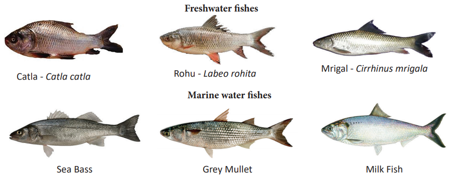
One of the most economically important shell fish resources of India are prawns. They are of great demand both in the local and international market. Due to their great taste, they are a cherished delicacy to be served as food. In view of their popularity and marketing avenues in foreign countries there is a need for developing advanced technology and intensify prawn culture in India.
A number of species of prawns of different sizes are found distributed in water resources. Only those prawns which are good in size, weight, available in plenty and easily cultivable are commonly selected for prawn culture on commercial basis
The rearing of marine penaied prawn is called marine prawn culture or shrimp culture. Penaeus indicus and Penaeus monodon are cultured in marine water.
Figure 23.17 Marine water prawn image was given below
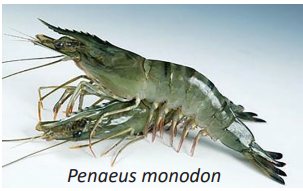
The rearing of freshwater prawn is called freshwater prawn culture. Macrobrachium rosenbergii and Macrobrachium malcomsonii are cultured in freshwater.
Figure 23.18 Freshwater prawn image was given below
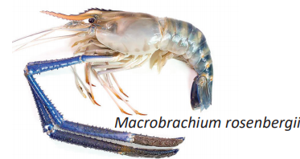
The methods employed for prawn culture are:
a. Seed collection and hatchery method
b. Paddy cum prawn culture method
Seed collection and hatchery method
The larvae and juveniles obtained by collection from natural resources Bracket OPEN estuaries, and backwaters bracket closed or by hatchery methods Bracket OPEN controlled breeding bracket closed. They are reared and grown into adults.
Figure 23.19 Post larvae Bracket OPEN Prawn seed bracket closed image was given below
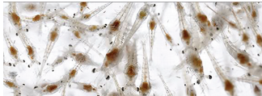
It is also called Pokkali culture. It is the oldest and traditional method of prawn culture practiced in Kerala. The low lying paddy fields along the coastal areas serve as suitable grounds for prawn culture. Prawns are cultured in these fields after the harvest of paddy.
Figure 23.20 Paddy cum prawn/fish culture image was given below
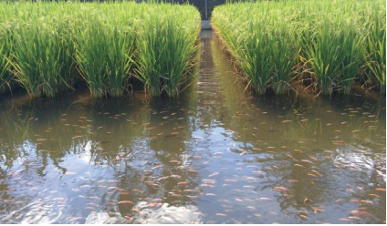
The awareness of organic matter and concept of sustainable agriculture is gaining importance among our farmers in the recent years to produce good quality crops. Maintenance of soil organic matter is very important for sustainable productivity and this is attained by vermitechnology.
Vermiculture involves the artificial rearing or cultivation of earthworms and using them for the production of compost from natural organic wastes.
The earthworms used for vermicompost production are Perionyx excavatus Bracket OPEN Indian blueworm bracket closed, Eisenia fetida Bracket OPEN Red worms bracket closed, Eudrilus eugeniae Bracket OPEN African night crawler bracket closed.
It is an important component of organic farming which can convert bio-wastes into nutrient rich organic manure by using earthworms. It feeds on the organic wastes and excrete it in digested form known as castings. The compost is generally called vermicompost.
Figure 23.21 Earthworm species for vermicomposting Image was given below
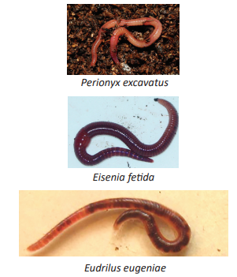
Vermicompost is the excreta Bracket OPEN worm castings bracket closed which is a fine, granular organic matter formed by the decomposition of organic materials by the earthworm. It is an ideal fertilizer for the soil.
Vermicomposting Materials
Biologically degradable organic wastes are used as potential organic resources for vermicomposting. They are:
Agricultural wastes Bracket OPEN crop residue, vegetables waste, sugarcane trash bracket closed
Crop residues Bracket OPEN rice straw, tea wastes, cereal and pulse residues, rice husk, tobacco wastes, coir wastes bracket closed
Leaf litter
Fruit and vegetable wastes
Animal wastes Bracket OPEN cattle dung, poultry droppings, pig slurry, goat and sheep droppings bracket closed
Biogas slurry
It is the rearing of earthworms in a container or bin. The container is half filled with bedding materials such as shredded cardboard, leaves, paddy husk, chopped straw, saw dust and manure. Small quantity of soil and sand is added to provide necessary grit for the worms. The bedding material should be moistened by adding water that enables free movements of the worms. The worms are gently placed and spread evenly on the bedding.
Organic wastes Bracket OPEN kitchen wastes, vegetable and fruit wastes bracket closed are added which are fed by the earthworms. The bin is covered with coconut leaves or gunny bags to conserve moisture, provide darkness and keep out of pests. After a period of 60 days the wastes are completely
transformed into nutrient rich materials that are excreted by earthworms known as worm castings. These castings are harvested and used as organic manure.
Figure 23.22 Vermicomposting bin image was given below
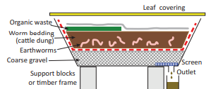
Box item open
Prepare vermicompost from organic waste materials present in your school surroundings and garden. The above activity can be done in a circular container/ bin and kept in shady place with optimal temperature and light. box item ends
Vermicompost is dark brown in colour and similar to farmyard manure in colour and appearance.
It is a rich source of nutrients essential for plant growth. It makes the soil fertile.
It improves the water holding capacity and helps to prevent soil erosion.
It contains valuable vitamins, enzymes and growth regulator substances for increasing growth, vigour and yield of plants.
It enhances decomposition of organic matter in soil.
Vermicompost is free from pathogens and toxic elements.
Vermicompost is rich in beneficial microflora.
Apiculture is the rearing of honey bee for honey. It is also called Bee keeping. It is a profitable rural based industry. Honey bees are domesticated by farmers to produce honey.
There are three types of individuals in an honey bee colony namely the queen bee, the drones and the worker bees.
Queen Bee: The queen is the largest member and the fertile female of the colony. They are formed from fertile eggs. The queen is responsible for laying eggs in a colony.
Drones: They are the fertile males. They develop from unfertilized eggs. They are larger than the workers and smaller than the queens. Their main function is to fertilize the eggs produced by the queen.
Worker Bees: They are sterile female bees and are the smallest members of the colony. Their function is to collect honey, look after the young ones, clean the comb, defend the hive and maintain the temperature of the bee hive.
Figure 23.23 Types of Honey bee image was given below
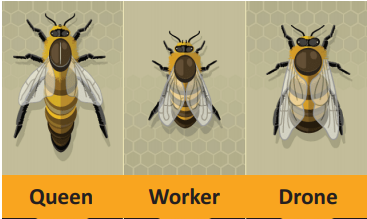
Indigenous varieties
1bracket closed Apis dorsata Bracket OPEN Rock bee or Wild bee bracket closed
2bracket closed Apis florea Bracket OPEN Little bee bracket closed
3bracket closed Apis indica Bracket OPEN Indian bee bracket closed
Exotic varieties
1bracket closed Apis mellifera Bracket OPEN Italian bee bracket closed
2bracket closed Apis adamsoni Bracket OPEN African bee bracket closed
The comb of the bees is formed mainly by the secretion of the wax glands present in the abdomen of the worker bee. A comb is a vertical sheet of wax with double layer of hexagonal cells.
Formation of Honey: The honey bees suck the nectar from various flowers. The nectar passes to the honey sac. In the honey sac, sucrose present in the nectar mixes with acidic secretion and by enzymatic action it is converted into honey which is stored in the special chambers of the hive.
Quality of honey depends upon the flowers available to the bees for nectar and pollen collection.
Honey bees are used in the production of honey and bee wax. Other useful products obtained from honey bees are bee pollen, royal jelly, propolis and bee venom.
Honey: Honey is a sweet, viscous, edible natural food product. Dextrose and sucrose gives sweet taste to the honey. It also contains amino acids, B-complex vitamins, ascorbic acid, and minerals Formic acid is a preservative in honey. Invertase is an enzyme present in honey.
Honey has an antiseptic and antibacterial property. It is a blood purifier.
It helps in building up of haemoglobin content in the blood.
It is used in Ayurvedic and Una ni system of medicines.
It prevents cough, cold, fever and relieves sore throat.
It is a remedy for ulcers of tongue, stomach and intestine.
It enhances digestion and appetite.
Box item open
Honey bee visits 50 to 100 flowers during a collection trip.
Average bee will make only 1 by 12th of a teaspoon of honey in its lifetime.
One kilogram of honey contains 3200 calories and is an energy rich food. Box item ends
Horticulture, is a branch of agriculture that deals with cultivation of fruits, vegetables, and ornamental plants.
The organic manures are predominantly derived from plant debris, animal faeces, microbes. They make the soil fertile.
Mushroom cultivation is a technology of growing mushrooms using plant, animal and industrial waste.
Hydroponics is the method of growing plants without soil, using mineral nutrient solutions in water.
The aeroponic system is high-tech type of hydroponic gardening and the growth medium is primarily air.
Dairy farming involves raising of cattle for milk production.
Aquaculture is the rearing of economically important aquatic organisms like fishes, prawns, shrimps, crabs, lobsters, edible oysters, pearl oysters and sea weeds under controlled and confined environmental conditions using advanced technologies.
Pesiculture or fish culture is the process of breeding and rearing of fishes in ponds, reservoirs Bracket OPEN dams bracket closed, lakes, rivers and paddy fields.
Vermiculture involves the artificial rearing or cultivation of earthworms and using them for the production of compost from natural organic wastes.
Aquaponics Combination of conventional aquaculture with hydroponics in a symbiotic environment in which plants are fed with the aquatic animals’ excreta or wastes.
Compost Soil conditioner, fertilizer, natural pesticide, a decomposed organic matter which is rich in nutrients.
Floriculture Production of ornamental plants.
Green manure Undecomposed green material derived mostly from leguminous plants.
Hydroponics Soil less growing system in which plants grow in water.
Mariculture Culture of fishes and other aquatic organism in marine water near the sea coast.
Nectar Sweet viscous secretion secreted by the flower of plants.
Olericulture Production of vegetables.
Pisciculture Culture and rearing of fishes under controlled conditions.
Polyculture Culture of more than one species of fish in a pond.
Pomology Production of fruits.
Vermicompost Vermicompost is the excreta of earthworm.
Vermicomposting Earthworms degrade organic waste materials into useful product which can be used as a nutrient rich fertilizer.
Vermiculture Artificial rearing or cultivation of earthworms for the production of
vermicompost.